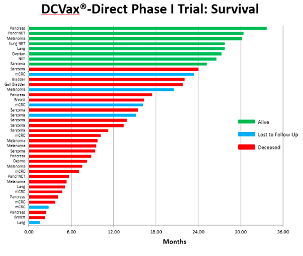
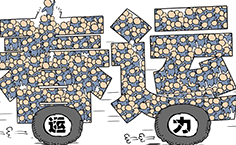

How NW Bio Fools Us by the Myth in Data Visualisation
2017-02-02
Jingxi HUANG
Data Visualisation
At the 5th Annual SMi Cancer Vaccines Conference in London in Sep 21 2016, Northwest Biotherapeutics (NASDAQ: NWBO),("NW Bio") a U.S. biotechnology company developing DCVax® personalized immune therapies for solid tumor cancers, presented an updated analysis of the Phase I DCVax®-Direct Trial data. The presentation demonstrated the cancer vaccines market was promising and feasible. But the actual figure was dismal, and could be easily comprehensible if we change the modle of graphs.
DC Vax-Direct is designed to treat inoperable solid tumors. The Phase I Trial treated patients with multiple inoperable metastatic tumors who had failed existing treatment regimens. DCVax-Direct was directly injected into one of the patients’ tumors and most patients received three treatments.The Trial included 40 patients, with 39 evaluable, and covered types of solid tumor cancers.
Some highlights of Dr. Marnix Bosch's, Chief Technical Officer, update presentation included:
- The top 20% of these patients have so far exceeded 2 years of survival and are still alive. The longest survivor to date has reached nearly 3 years.
- He attached the chart below for details.

.png) 43.5 million by water
43.5 million by water

Chunyun, or Spring Migration, is the period when millions of Chinese travel home for the Lunar New Year
-
Departure provinces/citis during Chunyun
These places are for people to struggle for work and dreams.
- The top 10 departure cities
| 1 Beijing |
|
6 Hangzhou |
.png) |
| 2 Guangzhou |
|
7 Chengdu |
|
| 3 Shanghai |
|
8 Nanjing |
|
| 4 Shenzheng |
|
9 Fuzhou |
|
| 5 Wuhan |
|
10 Xiamen |
|
-
Arrival principles/cities during Chunyun
Most of these places are people's hometown.
The proportion of taking high-speed rail is increased
Click Press Release to see the original data from NW Bio's webpage